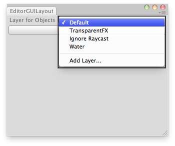

EditorGUILayout.LayerField
public static int LayerField(int layer,
params GUILayoutOption[] options);
public static int LayerField(string label,
int layer,
params GUILayoutOption[] options);
public static int LayerField(string label,
int layer,
GUIStyle style,
params GUILayoutOption[] options);
public static int LayerField(GUIContent label,
int layer,
GUIStyle style,
params GUILayoutOption[] options);
Parameters
| label | Optional label in front of the field. | |
| layer | The layer shown in the field. | |
| style | Optional GUIStyle. | |
| options | An optional list of layout options that specify extra layout properties. Any values passed in here will override settings defined by the style.See Also: GUILayout.Width, GUILayout.Height, GUILayout.MinWidth, GUILayout.MaxWidth, GUILayout.MinHeight, GUILayout.MaxHeight, GUILayout.ExpandWidth, GUILayout.ExpandHeight. |
Returns
int The layer selected by the user.
Description 描述
Make a layer selection field.

Set the layer of the selected GameObjects.
// Simple editor script that lets you set the layer for the // selected GameObjects.
using UnityEngine; using UnityEditor;
public class LayerFieldExample : EditorWindow { static int selectedLayer = 0;
[MenuItem("Examples/Layer Field usage")] static void Init() { LayerFieldExample window = (LayerFieldExample)GetWindow(typeof(LayerFieldExample)); window.Show(); }
// Disable menu if we dont have at least 1 gameobject selected [MenuItem("Examples/Layer Field usage", true)] static bool ValidateSelection() { return Selection.activeGameObject != null; }
void OnGUI() { selectedLayer = EditorGUILayout.LayerField("Layer for Objects:", selectedLayer); if (GUILayout.Button("Set Layer!")) SetLayer(); }
static void SetLayer() { foreach (var go in Selection.gameObjects) go.layer = selectedLayer; } }